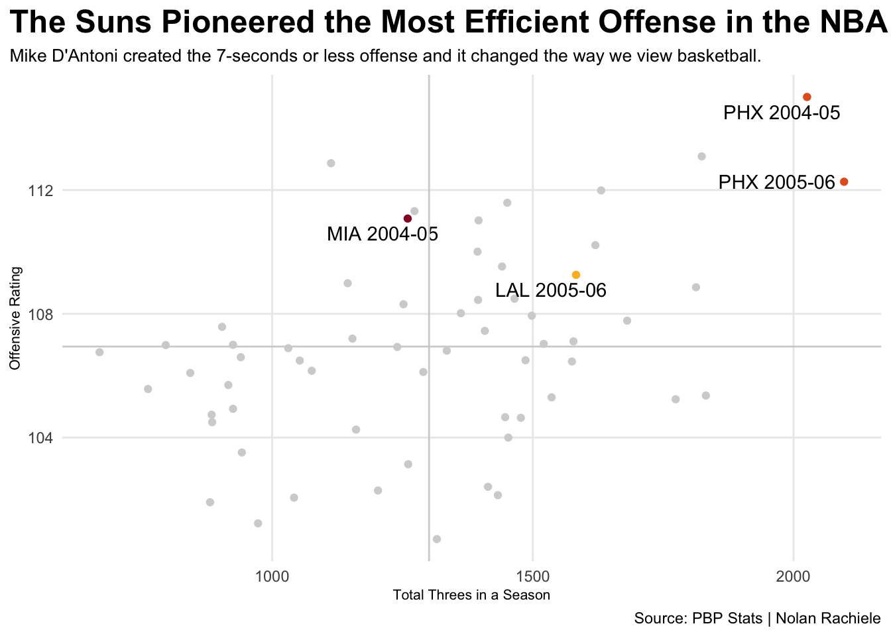

Steve Nash is often discredited and disrespected by his NBA peers and fans of the league. Fans overlooked Nash until he was 30 and joined the Phoenix Suns, where he propelled the team with the most explosive offensive output in the league and potentially altered league history. Did Steve Nash deserve his MVP’s or did other players deserve the award?
Nash’s 2004-05 Suns started the three-point explosion by showcasing the correlation between 3 point attempts and offensive rating. Ultimately, the more shots the Suns took ended in a higher pace and a higher offensive rating.
Code
library(tidyverse)library(ggalt)library(ggrepel)library(gt)library(hoopR)threes<-read_csv("Steve Nash Data/3ptandRTG.csv")rap <-read_csv("Steve Nash Data/Raptor/Historical RAPTOR by Player.csv")modern <-read_csv("advanced.csv")raptor <- rap |>filter(mp>1500)rank <- raptor |>filter(season %in%2000:2024) |>group_by(season) |>arrange(desc(raptor_offense)) |>mutate(raptor_rank =row_number())|>ungroup() three04<-threes |>group_by(Name,Season) |>summarize(Threes =sum(FG3A),rating =sum(OffRTG)) |>mutate(TeamSeason =paste(Name, Season))all <- three04 |>filter( (Name=="PHX"& Season %in%c("2004-05", "2005-06")) | (Name=="MIA"& Season=="2004-05") | (Name=="LAL"& Season =="2005-06") )phx <-three04 |>filter(Name=="PHX")mia <- three04 |>filter(Name=="MIA"& Season=="2004-05")lal <- three04 |>filter(Name=="LAL"& Season =="2005-06")ggplot() +geom_point(data=three04, aes(x=Threes, y=rating),color="lightgrey") +geom_point(data=phx, aes(x=Threes, y=rating),colour ="#E56020") +geom_point(data=lal, aes(x=Threes, y=rating),colour ="#FDB927") +geom_point(data=mia, aes(x=Threes, y=rating),colour ="#98002E") +geom_text_repel(data=all, aes(x=Threes, y=rating, label=TeamSeason))+geom_vline(xintercept =1301.017,color="lightgrey") +geom_hline(yintercept =106.9432,color="lightgrey") +labs(x="Total Threes in a Season",y="Offensive Rating", title="The Suns Pioneered the Most Efficient Offense in the NBA ", subtitle="Mike D'Antoni created the 7-seconds or less offense and it changed the way we view basketball.", caption="Source: PBP Stats | Nolan Rachiele" ) +theme_minimal() +theme(plot.title =element_text(size =18, face ="bold"),axis.title =element_text(size =8), plot.subtitle =element_text(size=10), panel.grid.minor =element_blank(),plot.title.position ="plot" )

The Suns climbed to the top record in the league after going 29-53 the previous year. The only difference: Steve Nash and Quinten Richardson. The Suns went 2-6 when Nash did not suit up throughout the year.
Code
boxscore <-load_nba_team_box(seasons =2005,season_type =2,dbConnection =NULL,tablename =NULL)box <- boxscore |>filter(season_type==2)seasonwins <- box |>group_by(team_name) |>arrange(game_date) |>mutate(win =case_when( team_winner ==TRUE~1, team_winner ==FALSE~0 ) ) |>mutate(cumwins =cumsum(win) ) |>ungroup()phoenix <-seasonwins |>filter(team_name =="Suns")mavs <-seasonwins |>filter(team_name =="Mavericks")miami <-seasonwins |>filter(team_name =="Heat")ggplot() +geom_step(data=seasonwins, aes(x=game_date, y=cumwins, group=team_name),color="lightgrey")+geom_step(data=phoenix, aes(x=game_date, y=cumwins, group=team_name),color="#E56020")+geom_step(data=mavs, aes(x=game_date, y=cumwins, group=team_name),color="#00538C") +geom_step(data=miami, aes(x=game_date, y=cumwins, group=team_name),color="#98002E")+annotate("rect", xmin =as.Date("2005-01-12"), xmax=as.Date("2005-01-22"), ymin =0, ymax=Inf, fill="lightgrey", alpha=.5) +geom_text(aes(x=as.Date("2005-01-17"), y=43, label="Steve Nash's\nFirst Injury"), color="black",size =3) +labs(x="", y="Total Wins", title="Phoenix Suns Climbed to the Best Team in the League", subtitle="The Suns had the best record over the course of the 2004 NBA season.They started the year 31-4\non the back of their newly acquired point guard. ", caption="HoopR | Nolan Rachiele" ) +theme_minimal() +theme(plot.title =element_text(size =18, face ="bold"),axis.title =element_text(size =8), plot.subtitle =element_text(size=10), panel.grid.minor =element_blank(),plot.title.position ="plot" )
Estimated Plus/Minus tries to aggregate a player’s impact on their team. Steve Nash added the most points per 100 possessions on the offensive end. Sorting by MVP finish in the 2005 season, Steve Nash made the biggest impact on a team’s offensive production by adding close to 5 points per 100 possessions, the highest in the league. He was responsible for all of his team’s looks, averaging 12.9 open shots created by his production, which led the league in 05.
Code
epm <-read_csv("Steve Nash Data/EPM.csv")epm04<- epm |>filter(Season==2005)epm05<- epm |>filter(Season==2006)nash04 <-epm |>filter((Player=="Steve Nash"& Season ==2005) | (Player =="Amar'e Stoudemire"& Season ==2005))nash05 <-epm |>filter(Player=="Steve Nash"& Season ==2006) shaq <-epm |>filter(Player=="Shaquille O'Neal"& Season ==2005)ggplot() +geom_bar(data=epm04, aes(x=reorder(Player, -`MVP Finish`), weight=OffEPM),fill="darkgrey") +geom_bar(data=nash04, aes(x=reorder(Player, -`MVP Finish`), weight=OffEPM),fill="#5f259f") +geom_bar(data=shaq, aes(x=reorder(Player, -`MVP Finish`), weight=OffEPM),fill="#98002E")+coord_flip() +labs(x="", y="Estimated Points Added", title="Steve Nash Had the Biggest Effect on the Best Offense", subtitle="Nash led the Suns to the best team in the league through his own offensive production.", caption="Source: DunksandThrees | Nolan Rachiele" ) +theme_minimal() +theme(plot.title =element_text(size =18, face ="bold"),axis.title =element_text(size =8), plot.subtitle =element_text(size=10), panel.grid.minor =element_blank(),plot.title.position ="plot" )
Comparing the players in the top ten of MVP finishes in 2005 and 2006, Nash generated points through scoring and passing the ball. Ben Taylor of Thinking Basketball created box creations that shows how many open shots a player has made for his team per 100 possessions. Nash led in 2005 by a wide margin. Steve Nash generates points at a high level and was even the most effective scorer by True Shooting percentage.
Code
four <- modern |>filter(Season==2005)five <- modern |>filter(Season ==2006) |>filter(!(Player =="Amar'e Stoudemire"))sn <- modern|>filter(Player =="Steve Nash")top3 <- modern |>filter( (Player %in%c("Steve Nash", "Shaquille O'Neal", "Dirk Nowitzki") & Season =="2005") | (Player %in%c("Steve Nash", "LeBron James", "Dirk Nowitzki") & Season =="2006") )ggplot() +geom_point(data=four, aes(x=PPG, y=APG, size =`TS%`), alpha =.3) +scale_size(range =c(.05, 10), name="True Shooting Percentage") +geom_point(data=five, aes(x=PPG, y=APG, size =`TS%`), alpha =.3) +geom_point(data=top3, aes(x=PPG, y=APG, size =`TS%`), color="#bf9a33") +geom_point(data=sn, aes(x=PPG, y=APG, size =`TS%`), color="#E56020") +geom_text_repel(data=top3, aes(x=PPG, y=APG, label=Player) ) +labs(x="Points Per Game", y="Assists Per Game", title="Steve Nash Tops the NBA in Generated Points by a Wide Margin", subtitle="The Sun's point guard leads the NBA in assists and is the most productive scorer in the league.\nNash showcases his offensive prowess by being a pass first guard. ", caption="Source: Basketball Reference | Nolan Rachiele" ) +theme_minimal() +theme(plot.title =element_text(size =17, face ="bold"),axis.title =element_text(size =8), plot.subtitle =element_text(size=10), panel.grid.minor =element_blank(),plot.title.position ="plot" )
MVP is an award based on precedent, and Steve Nash did everything to meet the criteria. The Suns were the top team in the league with a record of 62-20. The MVP is also given to the players whose impact on the offensive end was elite compared to their peers.
Code
mvp <- rank |>filter( (player_name =="Steve Nash"& season %in%c(2005, 2006)) | (player_name =="Dirk Nowitzki"& season ==2007) | (player_name =="Kobe Bryant"& season ==2008) | (player_name =="LeBron James"& season %in%c(2009, 2010, 2012, 2013)) | (player_name =="Derrick Rose"& season ==2011) | (player_name =="Kevin Durant"& season ==2014) ) |>select(player_name, season, raptor_rank) |>arrange(desc(season))season4 <- raptor |>filter(season==2004)mvp |>gt() |>cols_label(player_name ="Player",season ="Season",raptor_rank ="Offensive Rank" ) |>tab_header(title ="Offensive Production and the Correlation to MVP",subtitle ="Steve Nash's two MVPs backed by top 5 finishes in RAPTOR's offensive rating." ) |>tab_style(style =cell_text(color ="black", weight ="bold", align ="left"),locations =cells_title("title") ) |>tab_style(style =cell_text(color ="black", align ="left"),locations =cells_title("subtitle") )|>tab_style(locations =cells_column_labels(columns =everything()),style =list(cell_borders(sides ="bottom", weight =px(3)),cell_text(weight ="bold", size=12) )) |>tab_source_note(source_note =md("**By:** Nolan Rachiele | **Source:** 538's RAPTOR Database") ) |>opt_row_striping() |>opt_table_lines("none") |>tab_style(style =list(cell_fill(color ="#5f259f"),cell_text(color ="white") ),locations =cells_body(rows = player_name =="Steve Nash") )
Offensive Production and the Correlation to MVP
Steve Nash's two MVPs backed by top 5 finishes in RAPTOR's offensive rating.